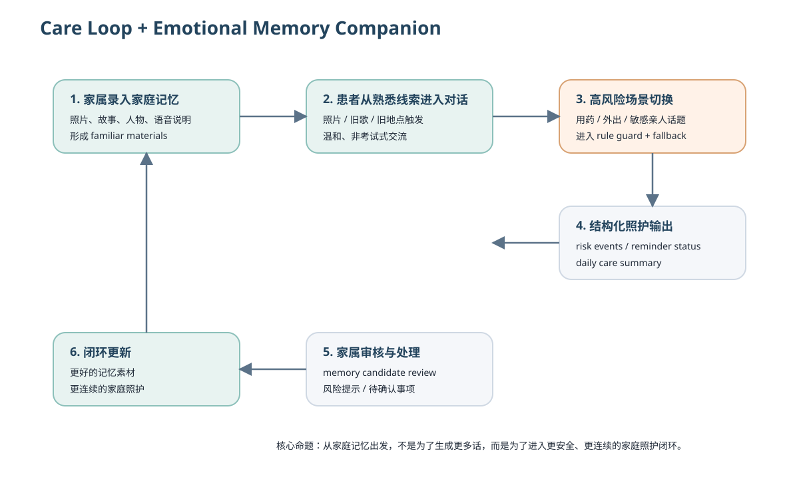
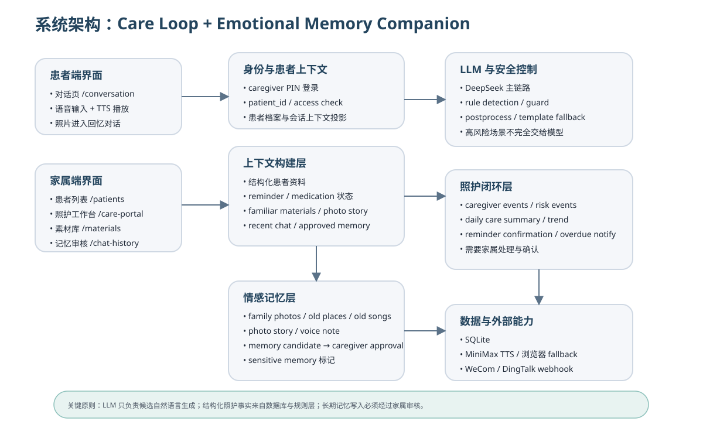
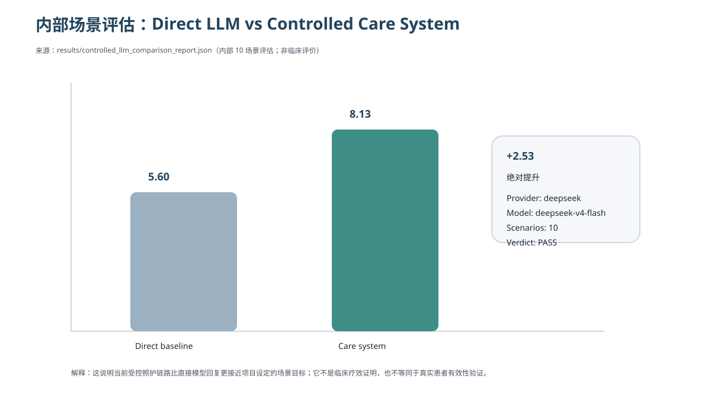

AdventureX Project Proposal
Alzheimer Family Care Assistant
面向阿尔兹海默症家庭的照护闭环与情感记忆陪伴系统
From General-Purpose LLMs to Family-Grounded Care Intelligence
1. Executive Summary
阿尔兹海默症家庭照护不是一个“更会聊天”的问题，而是一个如何让患者获得熟悉感、让家属获得行动支持的问题。通用大模型可以生成语言，但不能天然承担家庭照护责任。
本项目提出 Care Loop + Emotional Memory Companion：患者端通过家庭照片、故事、语音留言和熟悉素材进入温和对话；家属端通过 reminder、daily care、risk events、memory review 与 webhook 通知形成照护闭环。
当前仓库快照已具备可运行原型：FastAPI + SQLite、多患者管理、DeepSeek 主链路、规则安全层、患者对话页、家属工作台、materials、photo timeline、reminiscence、memory candidate、consent、TTS fallback 与内部评估页面。最新 committed 结果显示，在 10 个内部场景中，baseline 为 5.60，完整照护系统链路为 8.13，提升 +2.53。这不是临床验证，但说明“结构化照护状态 + 安全控制 + 家庭记忆 grounding”比直接 LLM 对话更接近目标场景。
2. The Problem: Care Is More Than Conversation
患者侧
- 重复提问与记忆下降
- 日期和位置困惑
- 焦虑与不安全感
- 敏感亲人话题
- 需要熟悉、温和、非考试式交流
家属侧
- 反复解释
- 用药和作息管理
- 外出与走失风险
- 无法持续陪伴
- 难以及时了解患者状态
家庭真正需要的不是一个会聊天的 AI，而是一个既理解患者熟悉世界、又能进入家属照护流程的辅助系统。
3. User and Scenario Definition
患者：中度认知障碍或阿尔兹海默症患者，需要语音优先、低认知负担交互，需要熟悉人物和故事，不能承受刺激性纠正和复杂指令。
家庭照护者：需要管理提醒和风险，需要掌握最近交流情况，需要审核长期记忆，不能把照护责任完全交给 AI。
Core Scenario：“李奶奶看到年轻时的家庭照片，想起过去；对话中又问自己是否吃过药，并提出想独自外出。系统如何在情感陪伴和照护安全之间切换？”
4. Insight and Design Principles
1. Familiarity before intelligence
2. Support, not examination
3. Structured facts before generated claims
4. Caregiver control over long-term memory
5. Human escalation for high-risk situations
5. Proposed Solution

6. Current Prototype and Evidence of Execution
| System Capability | Current Status | Implementation Evidence | Next Step |
|---|---|---|---|
| 多患者管理 | 已实现 | patients.html / patient_service.py | 统一 legacy path |
| DeepSeek 对话 | 已实现 | llm_service.py / committed JSON results | 环境下再次验证 |
| 家属 dashboard | 已实现 | index.html | 聚焦 Hero Demo |
| Materials / Photo Timeline | 已实现 | materials.html / photo_timeline.html | story-driven flow |
| Memory candidate / review | 部分实现 | memory_candidate_service.py | 统一 review UX |
| TTS / notification / PWA | 部分实现 | tts_service.py / notify_service.py / manifest.json | 保守定位为 demo-ready scaffolding |
7. Technical Architecture

LLM 只负责候选自然语言生成；结构化照护事实来自数据库和规则层；长期记忆写入必须经过 caregiver approval。
8. Technical Differentiation
| Dimension | Direct LLM Chatbot | This System |
|---|---|---|
| Patient context | Temporary prompt | Structured patient profile and materials |
| Medication facts | May hallucinate | Grounded in reminder records |
| High-risk dialogue | Model-dependent | Rule guard and template fallback |
| Family involvement | None | Caregiver dashboard and review |
| Long-term memory | Automatic or absent | Caregiver-governed |
| Emotional grounding | Generic empathy | Family photos, voices and stories |
| Evaluation | Subjective demo | Scenario-based controlled comparison |
9. Evaluation and Current Results

这些数字来自 committed JSON report，仅代表项目内部场景评估，而不是临床评价或真实患者有效性验证。
10. Why AdventureX and Why Now
我申请 AdventureX，不是为了在五天里提出一个概念，而是为了让一个已经运行的系统完成从“技术原型”到“可被真实家庭理解和试用的 MVP”的跃迁。
11. Five-Day Execution Plan

12. Success Metrics / 13. Deliverables / 14. Risks
成功指标围绕 reliability、user flow、safety、usability 展开；核心交付聚焦单一 Hero Demo；主要风险包括 LLM instability、TTS 环境依赖、真实用户招募与 scope expansion。
15. Founder / Builder Fit
我已经持续构建和迭代这个系统，而不是停留在想法阶段。我擅长把复杂功能拆成可验证闭环，这正是这个项目最需要的能力。
16. Long-Term Vision
Near-term：真实小样本测试、家庭记忆相册、声音陪伴、日常照护台账、隐私和授权。Mid-term：多家庭部署、更稳定的个性化检索、情绪与风险趋势。明确边界：不替代医生，不独立作医疗决策，不把情感陪伴等同于治疗。
17. Conclusion
这不是一个从概念开始的五天项目，而是一个已经具备技术基础、用户问题和验证框架的系统。AdventureX 的价值，是让它在五天内完成一次关键跃迁。